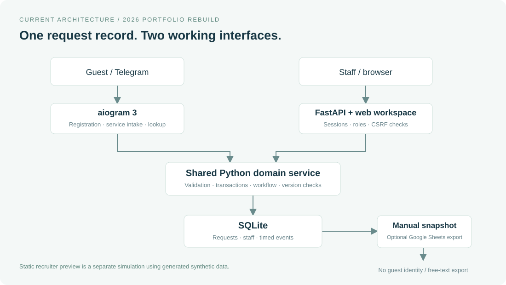

Defined the service problem
Conducted thesis research and synthesized guest friction through journey, blueprint and root-cause models.
GUESTFLOW / HOSPITALITY TECH
A research-led hotel service platform. From fragmented handoffs to one traceable guest-request workflow.
No account needed Fictional demo data
Guest context. Clear ownership.
A history the team can follow.
MY CONTRIBUTION / ALBINA URUBKINA
Conducted thesis research and synthesized guest friction through journey, blueprint and root-cause models.
Specified processes, requirements, UML and data structures; designed the original prototype workflow for the HSE thesis.
Reconstructed the workflow, staff workspace and synthetic analytics with AI engineering assistance. Scope and authorship limits are documented.
Problem → evidence → decisions
→ a working, measurable prototype.
Try one complete request in about 90 seconds, or inspect the decisions and source evidence behind it.
Explore the tradeoffs01 / THE CHALLENGE
A guest calls reception. Reception relays the request. Another department takes over. Context and responsibility can disappear between those steps.
Phone and reception friction; repeated requests; limited visibility into what happens next.
Manual handoffs make it harder to retain details, identify an owner and report completion.
Without a consistent operational record, demand and delays are difficult to review.
Themes reported in the Novotel Moscow thesis, pp. 24–26. Their frequency and operational cost were not independently measured.
02 / RESEARCH & DISCOVERY
Quantitative research, interviews and service-design artifacts informed the original problem definition.
Thesis-reported sample, 2024.
Raw responses are unavailable.
Guest interviews and online-review analysis; affinity grouping to identify service themes. Completed interview count is not preserved.
CJM and Service Blueprint to connect guest touchpoints with frontstage and backstage work.
Stakeholder analysis, AS-IS / TO-BE and requirements to narrow the opportunity to request handling.
ORIGINAL AFFINITY CLUSTERS / TRANSLATED FROM THESIS FIGURE 2, P. 17
Reported as an “average”; calculation and promoter/detractor counts unavailable.
Reported mean score, not a satisfied-response percentage.
Question wording and scale direction unavailable; no directional interpretation.
Thesis-reported aggregates, not independently recomputed and not before/after results. These values are separate from the synthetic product analytics below.
03 / FROM INSIGHT TO PRODUCT DECISION
Select a finding to trace the reasoning from a reported problem to an implemented response.
THE PRODUCT REASONING
Requests can be lost during manual departmental handoffs.
Guests repeat information; staff receive incomplete context.
A shared, durable record may reduce missed or repeated requests.
Persist a request ID and timestamped event history; confirm only after saving.
More traceable service. Validate missed requests and repeat contacts in a pilot.
Implemented in the 2026 rebuild. The operational improvement remains unvalidated.
Acceptance criteria & verification ↗THREE DECISIONS / ALTERNATIVES & LIMITS
These are 2026 decision records. They explain the rebuild; they do not retrospectively claim that every tradeoff was tested in the thesis.
Low-code staff operations supported the original concept. The AppSheet application is lost; the thesis preserves its screens and logic.
A shared domain layer applies the same rules to bot and staff actions. The browser workspace is new; Sheets is an optional export.
| Alternative | Value | Tradeoff for this project |
|---|---|---|
| Streamlit | Rapid analytical dashboard | Less direct control over the inbox, drawer and per-request interactions |
| FastAPI + plain HTML/JS | Explicit API, role checks and a build-free interface | Manual UI state and accessibility need browser checks |
| React + FastAPI | Reusable components for a larger interface | A separate build toolchain with no demonstrated need at this scale |
Revisit when: multiple developers or more complex screens make component reuse worth the extra tooling. The static public preview simulates the workflow; real authorization runs in the local Python app.
Two non-atomic writes to SQLite and Sheets can leave different records of one request. The rebuild commits the request and its first event in one local transaction, then confirms capture. A Sheets outage does not prevent intake.
SQLite as the operational authority; optional explicit Sheets snapshots; constrained status transitions and record versions.
One host and local file storage. No bidirectional Sheets sync, PMS integration or proof of physical fulfillment. Concurrent writes and multiple instances may justify PostgreSQL later.
Evidence: transaction, transition and stale-version tests verify software behavior. A hotel pilot must still test whether fewer requests are missed.
Assignment does not count as a human response. First acknowledgement has its own timestamp. Resolution time and SLA compliance include currently resolved requests, so overdue active work appears beside those metrics.
68 of 96 requests are resolved; 27 of those 68 meet their assumed SLA (39.7%). Another 25 active requests are overdue at the fixed demo clock.
Review the oldest overdue requests and department workload before changing staffing. The dataset cannot establish causes, forecast hotel demand or demonstrate impact.
Next evidence: validate timestamps and SLA rules with staff, then compare a real baseline and pilot cohort. Segment by service and department; include cancellations, reopening and feedback response rates.
SQL → result → decision → validation ↗Full alternatives, verification and triggers for reconsideration: decision records.
04 / SERVICE & SYSTEM DESIGN
Selected models, each tied to a decision. These are current English reconstructions, not the lost original boards.
The broader journey spans booking to post-stay review. This product addresses the request portion, not the entire hotel experience.
Understand the stay
Outside MVPArrive and access room
Room is self-reportedAsk → track → receive
Primary product scopeDepart smoothly
Outside MVPGive service feedback
Per-request CSATPrioritize intake, handoffs and status visibility. Keep reservations, payments and check-in verification outside the prototype.
A focused TO-BE blueprint of the demonstrated service workflow.
| Layer | Capture | Triage | Fulfill | Follow up |
|---|---|---|---|---|
| Guest | Submit details | Wait / check status | Receive service | Rate resolved request |
| Frontstage | Telegram confirmation | Staff inbox & assignment | Staff record progress | Status lookup / CSAT |
| Backstage | Request + event transaction | Department & role checks | Validated state changes | Rating rules & history |
| Support | Catalog / room configuration | Staff procedures | Durable storage | Metrics & review |
A saved bot message is not a human response. Staff acknowledgement has its own timestamp, and physical service still depends on hotel operations.
Compare the thesis-derived manual process with the current implementation.
Abandonment and repeated contacts appear in the source model; their frequency is unknown.
One durable record across the handoff, with explicit responsibility and history.
Model acknowledgement, progress, resolution and reopening separately; prevent arbitrary status edits and silent concurrent overwrites.
The bot and staff API share the same domain service and SQLite database. Optional Sheets export sits outside the intake path.

Version checks protect simultaneous edits. This is an operational history, not a tamper-proof ledger.
Keep intake working during a Sheets outage. Use a lean, build-free stack suited to a single-hotel demonstrator.
05 / THE PRODUCT
A Telegram guest flow and a reconstructed staff workspace. Explore the demonstrated capabilities.
Find the right workSearch and filter by department, status and creation date.
Assign & acknowledgeSelect an eligible employee and record first staff response.
Act with contextProgress, resolve or reopen while retaining event history.
The original Telegram concept is preserved. Status lookup and service ratings are additions in the 2026 rebuild.
Flow reconstructed from current bot code, not a captured Telegram session. Dispatch is tested offline; live delivery still needs new credentials.
Inspect the bot implementation ↗Room and name. Room entry is self-reported, not check-in verification.
Select a category and service; add timing or preferences.
Confirmation follows a successful database commit.
/requests for status; /rate ID SCORE after resolution.
The service catalog creates requests. It does not guarantee bookings, payments or physical fulfillment. Proactive guest notifications and PMS integration remain planned.
06 / PRODUCT ANALYTICS
Pair speed with completion, reopens and guest feedback. Each metric answers a different operational question.
Synthetic demo data96 fictional requests · fixed cohort as of 8 Oct 2026, 18:00 UTC · no measured hotel impact
Mean time from creation to first staff acknowledgement, across 89 acknowledged requests.
Unacknowledged requests are excluded. Bot confirmation and assignment do not count as staff response.
Faster closure is not automatically better service.
Review reopens, feedback coverage and overdue active work alongside timing.
07 / IMPACT & VALIDATION
DELIVERED
TECHNICALLY VALIDATED
NOT YET VALIDATED
Shipping the workflow proves it can run.
A hotel pilot must establish whether it helps.
08 / MY CONTRIBUTION
Albina Urubkina · Business Informatics, HSE University. My strongest contribution is connecting guest needs, operational rules and product decisions.
Authorship & provenance ↗Customer research, CJM and Service Blueprint; stakeholder analysis; requirements; AS-IS / TO-BE, UX flows, UML and data modeling; prototype design and coordination.
Documented workflows reconstructed as a new staff workspace, explicit request/event model, operational metrics, synthetic demonstration and English case materials.
09 / LESSONS & NEXT STEPS
Hospitality relevance does not establish Dubai market fit. Guest channel preferences, languages, property systems and staff routines need fresh discovery. Telegram adoption, identity integration and the current single-instance SQLite setup are explicit constraints.
Backlog & roadmap ↗EXPLORE THE WORK
Public demo runs without an account or backend. Synthetic data; changes reset on refresh.